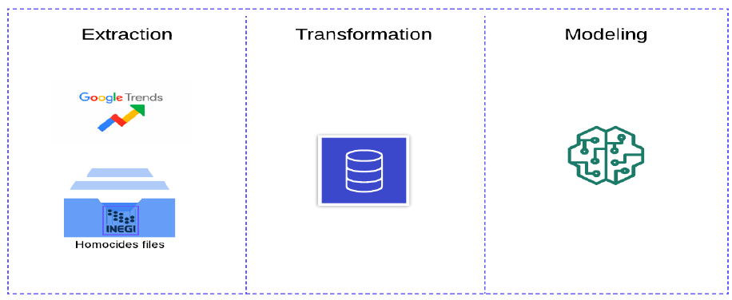
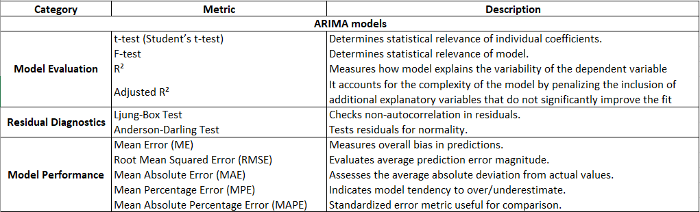
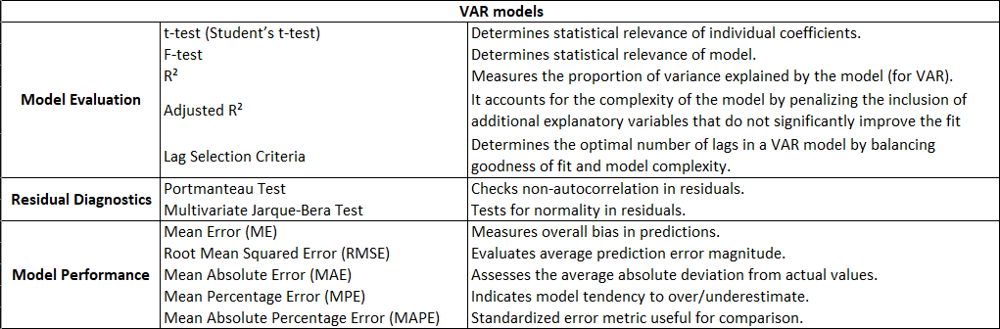
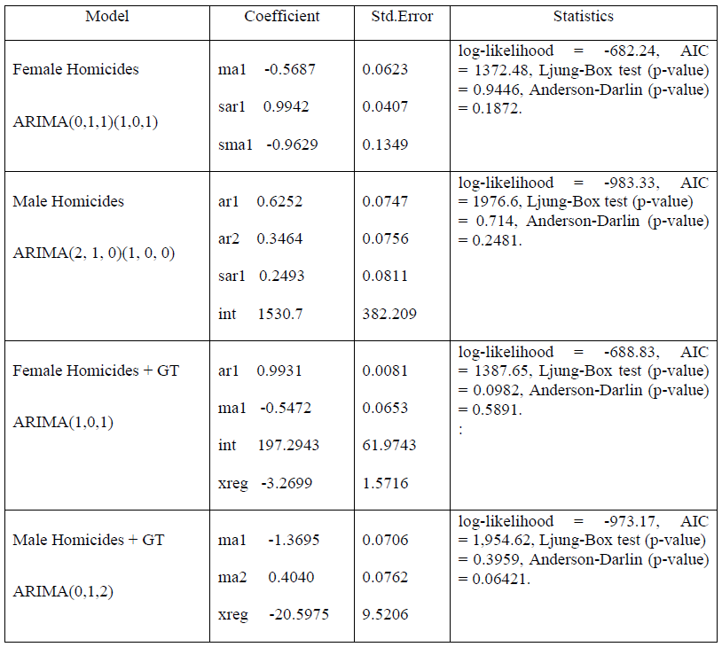
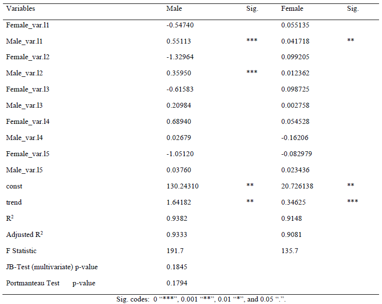

Comparison of univariates and multivariates forecasts of homicides in Mexico with and without Google Trends data
Eduardo Vazquez
Thesis tutor - PhD. Eliud Silva
Thesis tutor - PhD. Eliud Silva
Universidad Anahuac
Introduction
Context: National homicide rates in Mexico have tripled since 1990. Violence generates significant social disruptions. To effectively address this issue, it is essential to shift from a reactive approach to a proactive one, leveraging forecasting techniques to inform strategy and prevention efforts.
Objective: Comparing forecasting strategies to predict national homicide rates by sex, using Google Trends data.
Research Context
- Homicides are among the top causes of death in Mexico.
- The rate increased from 8.1 per 100,000 in 1990 to 25 in 2020.
According to Mexico Unido Contra la Delincuencia (2024)
Five municipalities (Tijuana, Juárez, León, Acapulco de Juárez, and Celaya) accounted for 18% of the country’s total violence and rank among the most dangerous in the world.
71% of homicides in Mexico involve firearms, a rate above 60% for 15 years (73% for men and 61% for women in 2023)
Of 21,927 firearm homicides in 2023, the weapon type is known for only 1.1% of cases, with no data for the remaining 98.9%.
Literature Review
The literature on homicide forecasting is still developing, with limited studies compared to other crime forecasting areas.
| Author | Methodology | Findings | Scope |
|---|---|---|---|
| Ramallo et al. (2023) | Dynamic Factor Model (DFM) | Improved homicide forecasting with multiple data sources. | International (USA) |
| Santos-Marquez (2021) | ETS, ARIMA, beta-convergence models | Found STAR and beta-convergence models most accurate. | International (Colombia) |
| Swedo et al. (2023) | Ensemble model with Google Trends | Reduced homicide reporting lag. | International (USA) |
| Calvo et al. (2017) | CR-Ω+ model integrating clustering and optimization | Enhanced patrol effectiveness in crime prediction. | National (Mexico) |
| García-Gómez et al. (2022) | Bayesian Ridge & SVR | Effective homicide forecasting in Mexico. | National (Mexico) |
| Gress et al. (2023) | Descriptive statistics & hypothesis testing | Identified increasing feminicide trends. | National (Mexico) |
| Piña-García & Ramírez-Ramírez (2019) | ARIMA with Google Trends & Twitter | Crime predictions enhanced using search data. | National (Mexico) |
While some models exist, research remains fragmented, and there is room for improvement in data sources and methodologies.
Data Sources
- INEGI Homicide Data (1990-2020)
- Monthly aggregation (2004-2020)
- Demographic and geographical details
- Google Trends API
- Provides access to a largely unfiltered sample of actual search requests made to Google
- The resulting numbers are then scaled on a range of 0 to 100 based on a topic’s proportion to all searches on all topic

Data Limitations
Homicide Data Constraints
- Year of Occurrence vs. Year of Registration: Some homicides are registered in a different year from their occurrence, causing inconsistencies in trend analysis.
- Missing Data: Some homicide records lack information on the exact year of occurrence, leading to potential bias in estimations.
- Publication Lag: INEGI’s homicide data is subject to delays in publication, limiting real-time analysis and decision-making.
- Changes in political cycles: Political cycles can shift as governments adopt new strategies or methodologies (e.g., 2020)
Google Trends Limitations
- Consistency Challenges: Google Trends data is based on a sampling approach that may introduce variability across different queries and time periods.
- Sampling Techniques: The platform does not provide raw search volume data, but rather normalized indices, which can make direct comparisons across different terms and regions complex.
Estimation Strategy
- Extraction: Retrieve data from INEGI and Google Trends.
- Transformation: Clean and structure the data.
- Modeling:
- PCA on Google Trends data
- ARIMA & VAR models estimation
- Forecast generation and accuracy assessment

Modeling - Exploratory Data Analysis
- Homicide Trends (2006-2021)
- Government security policy shifts affecting trends in 2007
- Unexpected decline in 2020 (Covid, Homicide Reclasification)
Modeling - Principal Component Analysis (PCA)
- Key Terms Used in Research:
- Report, Complaint, Homicide, Injuries, Theft, Assault, Murder, Missing (female), Missing (male), Rape, Firearm, Corpse, Femicide, Accused, Pistol, Aggressor, Extortion, Soldier, Police, Trafficking.
- Purpose:
- Reduce dimensionality while preserving key variations.
- Methodology:
- Extracted key terms from Google Trends.
- Applied PCA to generate a single principal component summarizing crime-related searches.
- Selected the first component capturing the highest variance.
Modeling - ARIMA & VAR Models
ARIMA Models
Forecasting based on historical patterns
Equation: \[ y_t = c + \phi_1 y_{t-1} + \phi_2 y_{t-2} + \dots + \phi_p y_{t-p} + \theta_1 \epsilon_{t-1} + \theta_2 \epsilon_{t-2} + \dots + \theta_q \epsilon_{t-q} + \epsilon_t \]
Widely used statistical model that predicts future values based on past observations. It effectively identifies trends, seasonality, and fluctuations by combining:
- AutoRegressive (AR): Uses past values for forecasting.
- Integrated (I): Adjusts for trends to stabilize data.
- Moving Average (MA): Accounts for past errors to refine predictions.
This model is ideal for short-term forecasting in finance, economics, and operational planning.
VAR Models
Understanding relationships between multiple factors
Equation: \[ Y_{1,t}=\ c_1\ +\ A_{11,1}Y_{1,t-1}+{\ A}_{12,1}Y_{2,t-1}+\ ...\ +A_{1k,p}Y_{k,t-p\ }+u_{1,t}\ \\ Y_{2,t}=\ c_2\ +\ A_{21,1}Y_{1,t-1}+{\ A}_{22,1}Y_{2,t-1}+\ ...\ +A_{2k,p}Y_{k,t-p} +u_{2,,t} \\ ... \\ Y_{k,t}=\ c_k\ +\ A_{k1,1}Y_{1,t-1}+{\ A}_{k2,1}Y_{2,t-1}+\ ...\ +A_{3k,p}Y_{k,t-p} +u_{3,,t} \]
Analyzes how different variables influence each other over time. Unlike ARIMA, which focuses on a single variable, VAR captures the dynamic interplay between multiple factors.
Helps understand cause-effect relationships between economic or social indicators.
Modeling - Assessment
ARIMA Models

VAR Models

Results - ARIMA Models
Results - VAR Model
Results - Forecast Performance Female Homicides
| Model | ME | RMSE | MAE | MPE | MAPE |
|---|---|---|---|---|---|
| ARIMA | -10.8304 | 19.2040 | 15.1015 | -4.1284 | 5.4938 |
| ARIMA + Google Trends | 0.0373 | 23.1409 | 20.1676 | -0.5460 | 7.1293 |
| VAR | -0.3923 | 20.3284 | 17.0104 | -0.6308 | 6.0221 |
| VAR + Google Trends | -2.9899 | 18.0249 | 14.8871 | -1.4215 | 5.2841 |

Results - Forecast Performance Male Homicides
| Model | ME | RMSE | MAE | MPE | MAPE |
|---|---|---|---|---|---|
| ARIMA | 142.7225 | 167.5095 | 142.7828 | 5.9106 | 5.9132 |
| ARIMA + Google Trends | -67.9903 | 112.9804 | 81.3703 | -2.9404 | 3.4834 |
| VAR | 78.1503 | 113.0374 | 96.1063 | 3.1845 | 3.9697 |
| VAR + Google Trends | 43.4894 | 91.3555 | 73.1320 | 1.7737 | 3.0512 |

Conclusions
- VAR + Google Trends provides the best forecasts.
- ARIMA models underperform due to univariate limitations.
- Exogenous indicators enhance predictability of homicide trends.
- Policy implications for crime prevention and early warning systems.
- It’s crucial to develop an effective forecasting strategy for potential interventions in public safety matters
References
Box, G. E., Jenkins, G. M., Reinsel, G. C., & Ljung, G. M. (2015). Time series analysis: forecasting and control. John Wiley & Sons.
Ciudadano, O. N. (2017). Desapariciones Forzadas. El Registro Estadístico de la Desaparicón: ¿Delito o Circunstancia? Ciudad de Mexico.
Delgadillo, G., & Torres, D. (26 de 12 de 2023). ¿Qué es y cómo funciona el Registro Nacional de Personas Desaparecidas y No Localizadas (RNPDNO)? Animal Politico. Obtenido de https://animalpolitico.com/analisis/organizaciones/el-blog-del-seminario-sobre-violencia-y-paz/registro-nacional-personas-desaparecidas-que-es-como-funciona?rtbref=rtb_krqfxr3j12dhx0dkl7c2_1714875535898
National System of Statistical and Geographical Information
Piña, C., & Ramirez-Ramirez, L. (July de 2019). Exploring crime patterns in Mexico City. Journal of Big Data, 6(65).